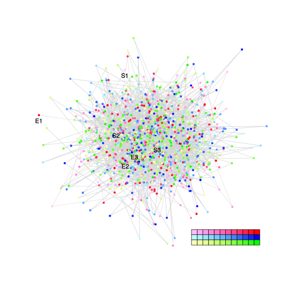

| chain # | burnin | subsample | Iterations (remaining) | command line | subdirectory | directory |
|---|---|---|---|---|---|---|
| 1 | 10000 | 1 | 90000 | bali-phy E1_AA_red3_Manatees.fas -s 21334 -n Manatees_c1 | Manatees_c1-1 | /DATA/work/ONCOGENEVOL/database/trees/Bali-Phy/red3/E1 |
| 2 | 10000 | 1 | 90000 | bali-phy E1_AA_red3_Manatees.fas -s 63433 -n Manatees_c2 | Manatees_c2-1 | /DATA/work/ONCOGENEVOL/database/trees/Bali-Phy/red3/E1 |
| 3 | 10000 | 1 | 90000 | bali-phy E1_AA_red3_Manatees.fas -s 45634 -n Manatees_c3 | Manatees_c3-1 | /DATA/work/ONCOGENEVOL/database/trees/Bali-Phy/red3/E1 |
| P(data|M) = -3088.314 +- 0.113 | Complete sample: 1 topologies | 95% Bayesian credible interval: 1 topologies |

Phylogeny Distribution

| Partition support: Summary |
| Partition support graph: SVG |
| 50% consensus | Newick (+PP) | SVG | |||||
| 66% consensus | Newick (+PP) | SVG | |||||
| 80% consensus | Newick (+PP) | SVG | |||||
| 90% consensus | Newick (+PP) | SVG | |||||
| 95% consensus | Newick (+PP) | SVG | |||||
| 99% consensus | Newick (+PP) | SVG | |||||
| 100% consensus | Newick (+PP) | SVG | |||||
| MAP | Newick (+PP) | SVG | |||||
| greedy | Newick (+PP) | SVG |
{kind=link}
{kind=link}
{kind=link}
{kind=link}
{kind=link}
{kind=link}
{kind=link}
{kind=link}
Alignment Distribution
Partition 1
| Diff | Min. %identity | # Sites | Constant | Informative | ||||
|---|---|---|---|---|---|---|---|---|
| Initial | FASTA | HTML | Diff | 8.6% | 628 | 54 (8.6%) | 0 (0%) | |
| Best (WPD) | FASTA | HTML | AU | 39.4% | 696 | 274 (39.4%) | 0 (0%) |


Mixing
| burnin (scalar) | ESS (scalar) | ESS (partition) | ASDSF | MSDSF | PSRF-CI80% | PSRF-RCF |
|---|---|---|---|---|---|---|
| 673 | 3151 | 0.000 | nan | 0.000 | 1.004 | 1.01 |
Projection of RF distances for the first 3 chains3D | Variation of split PPs across chainsNot generated: multiple chains needed. |
Scalar variables
| Statistic | Median | 95% BCI | ACT | ESS | burnin | PSRF-CI80% | PSRF-RCF |
|---|---|---|---|---|---|---|---|
| prior | -90.44 | (-117, -63.24) | 42.37 | 6371 | 452 | 1.001 | 1.002 |
| prior_A1 | -62.02 | (-86.6, -35.8) | 5.314 | 50808 | 198 | 1 | 1.004 |
| likelihood | -3071 | (-3089, -3053) | 5.28 | 51138 | 171 | 1 | 1.003 |
| logp | -3161 | (-3181, -3144) | 85.68 | 3151 | 624 | 0.9998 | 0.9971 |
| Heat.beta | 1 | ||||||
| Scale1 | 0.8578 | (0.0609, 3.829) | 1 | 270003 | 116 | 1 | 1 |
| S1.F.pi.A | 0.07876 | (0.06261, 0.0962) | 8.098 | 33342 | 383 | 1 | 1.003 |
| S1.F.pi.R | 0.06225 | (0.04768, 0.07798) | 7.978 | 33843 | 435 | 1 | 0.9964 |
| S1.F.pi.N | 0.04513 | (0.03335, 0.05785) | 7.845 | 34417 | 337 | 0.9996 | 0.9964 |
| S1.F.pi.D | 0.06025 | (0.04577, 0.07571) | 8.133 | 33198 | 443 | 1 | 1.01 |
| S1.F.pi.C | 0.02845 | (0.01815, 0.04006) | 8.466 | 31892 | 272 | 1 | 1.003 |
| S1.F.pi.Q | 0.03808 | (0.02736, 0.05009) | 7.966 | 33892 | 366 | 0.9998 | 1 |
| S1.F.pi.E | 0.06548 | (0.05066, 0.08084) | 8.035 | 33602 | 254 | 1.001 | 1.001 |
| S1.F.pi.G | 0.06656 | (0.05065, 0.08336) | 8.194 | 32951 | 548 | 1 | 1.005 |
| S1.F.pi.H | 0.02128 | (0.0131, 0.03069) | 7.916 | 34109 | 292 | 1 | 1.003 |
| S1.F.pi.I | 0.04674 | (0.03454, 0.06037) | 8.054 | 33525 | 501 | 0.9998 | 1.004 |
| S1.F.pi.L | 0.09088 | (0.07278, 0.1098) | 7.74 | 34881 | 535 | 1 | 1.001 |
| S1.F.pi.K | 0.05057 | (0.03762, 0.06423) | 7.928 | 34056 | 504 | 1 | 1.001 |
| S1.F.pi.M | 0.02094 | (0.01271, 0.03014) | 8.402 | 32134 | 548 | 1.001 | 1.002 |
| S1.F.pi.F | 0.04179 | (0.02949, 0.05528) | 8.381 | 32215 | 412 | 1 | 1.007 |
| S1.F.pi.P | 0.04247 | (0.02999, 0.05616) | 8.079 | 33421 | 431 | 1 | 0.9987 |
| S1.F.pi.S | 0.06258 | (0.04833, 0.07806) | 7.999 | 33754 | 481 | 1 | 1 |
| S1.F.pi.T | 0.05946 | (0.04537, 0.07444) | 7.961 | 33917 | 364 | 1 | 1.004 |
| S1.F.pi.W | 0.01905 | (0.01084, 0.02856) | 8.313 | 32477 | 673 | 0.9994 | 0.9974 |
| S1.F.pi.Y | 0.02927 | (0.01909, 0.04053) | 8.178 | 33013 | 612 | 0.9998 | 0.9945 |
| S1.F.pi.V | 0.06421 | (0.04948, 0.07982) | 8.322 | 32443 | 452 | 1 | 1.002 |
| I1.RS07.meanIndelLengthMinus1 | 16.13 | (3.555, 38.3) | 5.482 | 49253 | 272 | 1 | 1.001 |
| I1.RS07.logLambda | -4.601 | (-5.64, -3.781) | 1.682 | 160560 | 198 | 0.9999 | 1 |
| |A1| | 684 | (658, 710) | 5.867 | 46020 | 155 | 0.9915 | 1 |
| #indels1 | 6 | (3, 10) | 4.961 | 54429 | 141 | 0.8 | 1.004 |
| |indels1| | 125 | (73, 177) | 5.867 | 46020 | 155 | 1.004 | 1 |
| #substs1 | 282 | (265, 300) | 5.407 | 49938 | 266 | 0.9474 | 0.9999 |
| Scale1*|T| | 0.7398 | (0.6448, 0.8385) | 1.386 | 194831 | 72 | 1 | 0.9995 |
| |A| | 684 | (658, 710) | 5.867 | 46020 | 155 | 0.9915 | 1 |
| #indels | 6 | (3, 10) | 4.961 | 54429 | 141 | 0.8 | 1.004 |
| |indels| | 125 | (73, 177) | 5.867 | 46020 | 155 | 1.004 | 1 |
| #substs | 282 | (265, 300) | 5.407 | 49938 | 266 | 0.9474 | 0.9999 |
| |T| | 0.8632 | (0.05823, 3.835) | 1.011 | 266952 | 126 | 1 | 0.9996 |